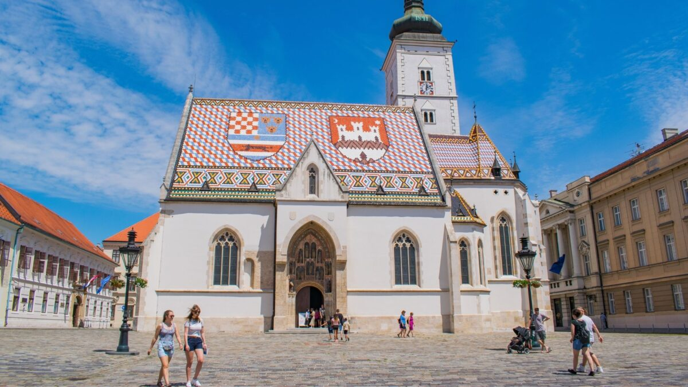
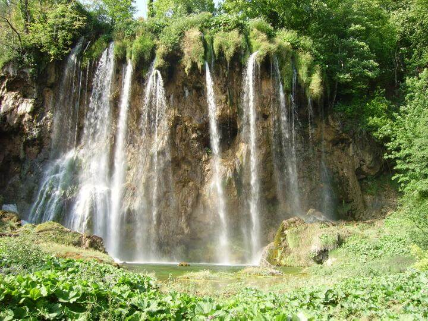
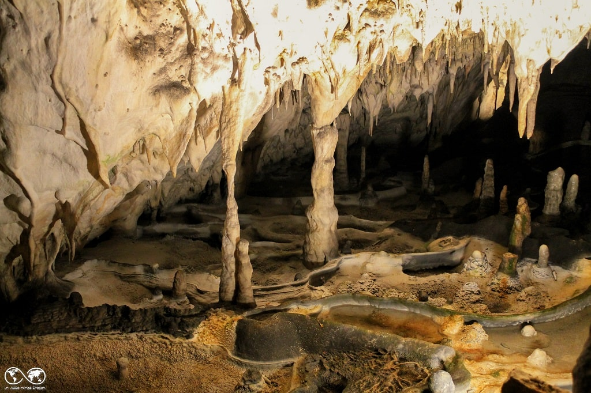
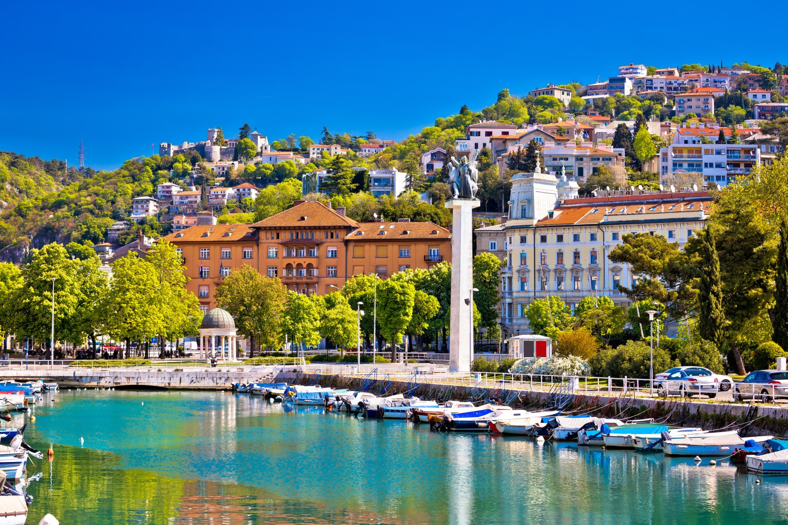

Le tappe del viaggio
Un itinerario tra Croazia, Slovenia e città storiche dell’Europa orientale.

Zagabria
Zagabria: Il Fascino Mitteleuropeo tra Passato e Presente Scopri la vivace capitale della Croazia, un luogo dove l'eleganza dell'architettura austro-ungarica incontra uno spirito vibrante e cosmopolita. Zagabria è una città fatta per essere passeggiata, divisa tra la suggestiva Città Alta (Gornji Grad), con le sue strade acciottolate e i lampioni a gas, e la Città Bassa (Donji Grad), un tripudio di piali verdi, musei e teatri. È la destinazione perfetta per chi cerca un mix di cultura ricca, gastronomia eccellente e un'incredibile "cultura dei caffè" che anima le piazze a ogni ora del giorno.
Da non perdere:
L'iconico tetto colorato della Chiesa di San Marco, i sapori autentici del Mercato di Dolac e l'eccentrico e toccante Museo delle Relazioni Interrotte.
Laghi di Plitvice
Laghi di Plitvice: L'Eden d'Acqua e Smeraldo della Croazia Un vero e proprio paradiso terrestre e orgoglioso Patrimonio dell'Umanità UNESCO. Il Parco Nazionale dei Laghi di Plitvice ti incanterà con il suo ecosistema unico: 16 laghi terrazzati dalle sfumature che vanno dal turchese allo smeraldo, collegati da una rete spettacolare di cascate fragorose. Esplorare il parco camminando sulle iconiche passerelle di legno, sospese a pelo d'acqua e circondate da foreste incontaminate, è un'esperienza visiva e sensoriale che riconnette profondamente con la natura.
Da non perdere:
La maestosa Grande Cascata (Veliki Slap), il contrasto tra i Laghi Superiori e Inferiori, e un giro in barca elettrica sul lago Kozjak.
Grotte di Postumia
Grotte di Postumia: Un Viaggio nel Cuore della Terra Preparati a rimanere a bocca aperta di fronte alla meraviglia sotterranea più famosa d'Europa. Situate in Slovenia, le Grotte di Postumia offrono un'avventura speleologica accessibile a tutti e dal fascino fiabesco. A bordo di uno storico trenino elettrico sotterraneo, attraverserai chilometri di gallerie drammaticamente illuminate, ammirando foreste di stalattiti, drappeggi di calcare e immense sale sotterranee scolpite dalla natura nel corso di milioni di anni.
Da non perdere:
Il viaggio panoramico in trenino, la scultura naturale "Il Brillante" (il simbolo delle grotte) e l'incontro con il misterioso "Proteo", il piccolo drago sotterraneo.
Fiume
Fiume (Rijeka): L'Anima Marittima e Culturale del Quarnero Affacciata sul magico Golfo del Quarnero, Fiume (Rijeka) è la principale e più dinamica città portuale della Croazia. Questa ex Capitale Europea della Cultura è un affascinante mosaico di contrasti: la grandiosità dei palazzi asburgici si mescola al suo orgoglioso e crudo patrimonio industriale marittimo. Con una vivace scena artistica, ristoranti di pesce eccezionali e uno spirito profondamente aperto e ribelle, Fiume è la porta di accesso perfetta per le isole del Quarnero, ma merita assolutamente di essere vissuta per la sua identità unica.
Da non perdere:
Una passeggiata sul lungomare pedonale Korzo, l'ascesa storico-religiosa al Castello di Tersatto (Trsat) e il pittoresco Mercato Cittadino vicino al porto.
Gorizia
Gorizia: La Città di Frontiera dal Cuore Senza Confini Adagiata dolcemente sul confine tra Italia e Slovenia, Gorizia è una gemma nascosta dove si fondono armoniosamente culture latine, slave e germaniche. Conosciuta per il suo clima mite e per essere la metà di un'unica area urbana condivisa con Nova Gorica (celebrata come Capitale Europea della Cultura 2025), è una destinazione che respira storia a ogni angolo. Dalle sue piazze eleganti circondate da palazzi asburgici ai suggestivi panorami collinari, Gorizia è il simbolo di un'Europa unita e senza barriere.